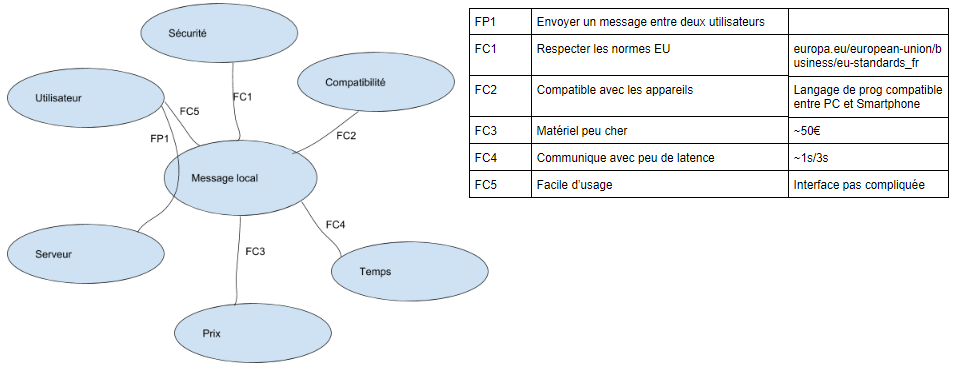

Actuellement, il est simple d'envoyer un message sur un réseau social mais lorsqu'on à plus internet, cela devient plus difficile.
La base du projet était de pouvoir envoyer des messages dans un réseau local.
Le projet à du être divisée en deux parties :
Yannick s'est occupé de la version bluetooth du projet.
Programme Bluetooth
Thibault a choisi de s'occuper de la version fillaire du projet et d'une partie du site web.
La méthode utilisée dans le project filaire est le RX/TX.
Programme RX/TX
Vincent a fait la bête à cornes, le diagramme pieuvre et une partie du site web.
